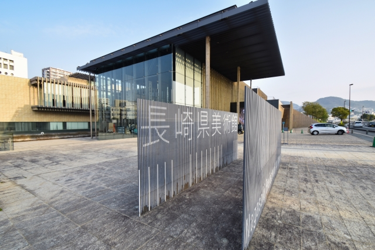
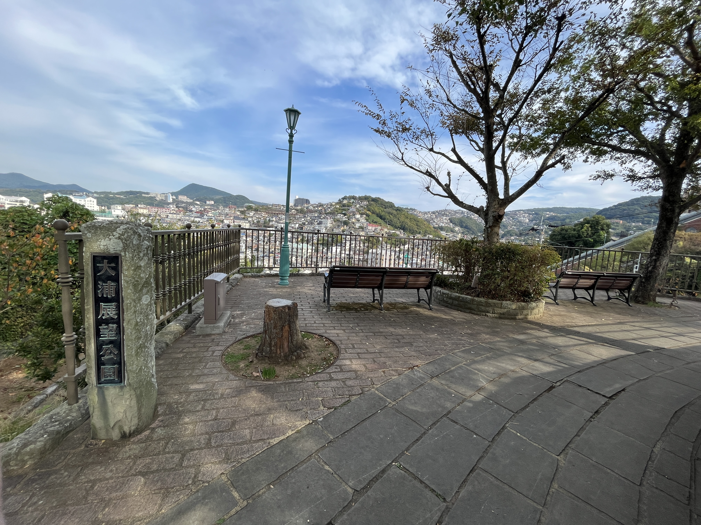
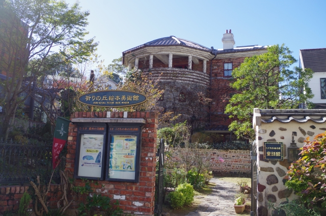
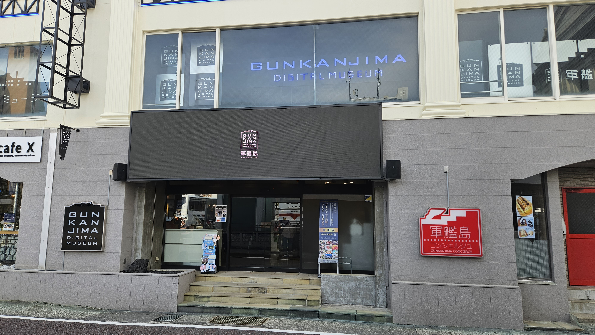

長崎市観光
時間: 8時〜19時
移動開始位置名: 松ヶ枝国際ターミナル
1つ目の場所: 長崎県美術館
特徴: 東洋有数のスペイン美術と長崎ゆかりの美術を収蔵。自然と調和した憩いの美術館。
美しい自然と調和したモダンな建築で、世界的な建築家・隈研吾氏のデザインが際立っています。その美しい空間で、長崎ゆかりの美術や中世・現代のスペイン美術を中心に、多彩な企画展が楽しめる心地よい場所です。
滞在時間:60分
2つ目の場所: 出島
特徴: 19世紀初めへタイムスリップ！国指定史跡「出島和蘭商館跡」
扇形の地形を持つこの島では、外国人の居住が許され、限られた日本人のみが入島できました。
江戸時代にタイムスリップできる歴史的な場所として、現代にもその魅力を伝えています。
滞在時間:90分
3つ目の場所: 長崎歴史文化博物館

特徴: 五感をつかって学ぼう！近世長崎の海外交流の歴史と文化
江戸時代からの海外交流の歴史を深く掘り下げ、その一端を復元した長崎奉行所で実際の裁判の寸劇を楽しむことができます。400年にわたる長崎の文化を約81,000点の貴重な資料と共に学び、国際交流の歴史を時代ごとの展示を通じて体験することができる博物館です。
滞在時間:60分
4つ目の場所: 東山手洋風住宅群（7棟）

特徴: 市指定有形文化財・7棟の木造洋館群
明治時代後半に建てられ、質素ながらも趣のある木造洋館が密集する東山手洋風住宅群は、長崎の歴史を感じることができる貴重なスポットです。
現在、そのうちの6棟は町並み保存センターや資料館として、また国際交流の場としても利用されています。
滞在時間:20分
5つ目の場所: 長崎市古写真資料館・埋蔵資料館
特徴: 明治20年後半に建造された7棟の洋風住宅を復元し、その内の3棟を古写真資料館、1棟を埋蔵資料館として活用しています。
明治中期の建築美を保持する洋風住宅を活用し、幕末から明治期の長崎の貴重な歴史を伝える古写真や埋蔵品を展示しております。
写真の開祖・上野彦馬の業績を含め、当時の国際都市としての長崎の魅力を再発見することができる場所です。
滞在時間:30分
6つ目の場所: 長崎孔子廟 中国歴代博物館

特徴: 壮麗な伝統美を随所に凝らした日本で唯一の本格的中国様式の霊廟
江戸時代から続く歴史と唯一無二の中国様式が息づく長崎孔子廟で、中国の春秋時代の偉大な思想家の遺産に触れ、中国歴代博物館に展示されている貴重な宮廷文物や古代美術を堪能できます。
滞在時間:60分
7つ目の場所: 大浦展望公園
特徴: 居留地跡観光のひと休みスポットに最適
長崎港を一望できる場所にあり、東山手の歴史的な洋風住宅や孔子廟を望むことができます。
夜には、長崎市街地の光景が一層美しく映え、訪れる人々に特別な時間を提供しています。
滞在時間:20分
8つ目の場所: 南山手レストハウス（旧清水氏住宅）
特徴: 居留地時代の住居を一般公開
石と木の併用された独特なテラスと、無料で公開されている歴史的資料で訪れる者を魅了します。
美しい長崎港の景色と共に、夜のライトアップは昼間とは異なる幻想的な雰囲気を演出しています。
滞在時間:20分
9つ目の場所: グラバー園

特徴: 偉人たちも魅せられた長崎港の絶景を体感！
長崎港を一望できる南山手の丘にある、明治期の洋館群を展示する観光スポットです。世界遺産の構成資産である旧グラバー住宅をはじめ、国指定重要文化財の旧リンガー住宅や旧オルト住宅など、異国情緒あふれる建築物が見どころです。園内には花や緑が豊富で、石畳や石段にも歴史や文化の香りが漂います。
滞在時間:60分
10つ目の場所: 瑠璃庵 長崎工芸館

特徴: 南蛮人がはるか昔に運んできた不思議な色と形に新しい生命を吹き込んだ作品
長崎の美しいガラス工芸の伝統を今に伝える場所で、吹きガラスとステンドグラスの技法を使ったアイテムの制作が行われています。
長崎の地で約400年続くビードロ吹きの技術を現代に伝える職人の手で、感性を揺さぶる美しいガラス作品が生まれています。
滞在時間:30分
11つ目の場所: 祈りの丘絵本美術館
特徴: 絵本の歴史とゆかりのある丘に
長崎の歴史的な丘に位置し、洋風瓦葺きの特色ある建物に囲まれ、絵本とその原画の世界を堪能できます。
美しい展示に加え、1万冊以上の厳選された絵本に囲まれながら、心地良い時間を過ごし、新しい発見と感動に満ちた経験ができます。
滞在時間:30分
12つ目の場所: 軍艦島デジタルミュージアム
特徴: 3D、VR、MRなど最新のデジタル技術であの頃の軍艦島にタイムスリップ！
長崎の軍艦島の歴史と文化を最新のデジタル技術を使って再現し、訪問者に感動的な体験を提供しています。
また、多様な展示やVR技術を通じて、かつての島の生活を独特の魅力で伝えています。
滞在時間:30分
13つ目の場所: 長崎市旧香港上海銀行長崎支店記念館

特徴: 長崎近代交流史と孫文・梅屋庄吉ミュージアム
長崎の近代交流史を学べる貴重な場所です。
明治期の建築美と歴史的背景が息づく空間で、長崎の国際的な交流の歴史を感じることができます。
滞在時間:60分
到着:松ヶ枝国際ターミナル